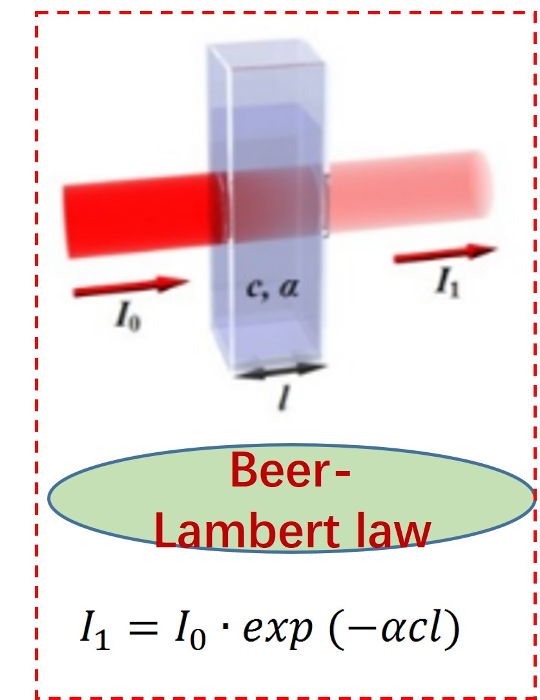
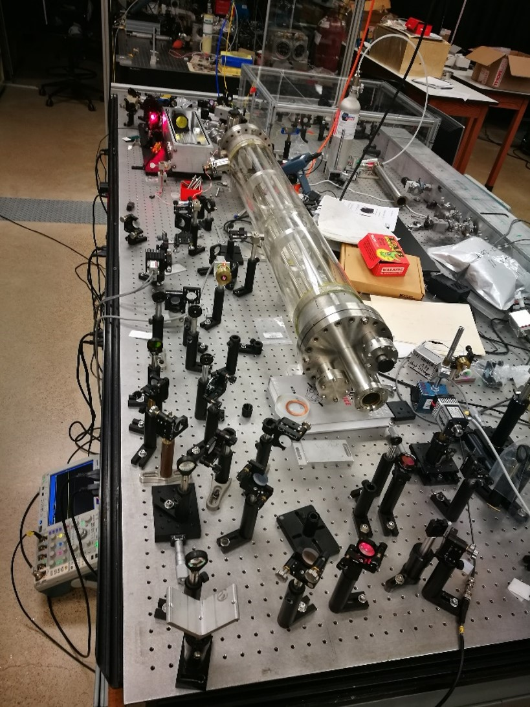
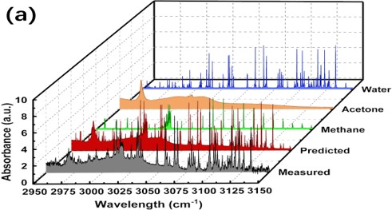
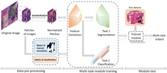
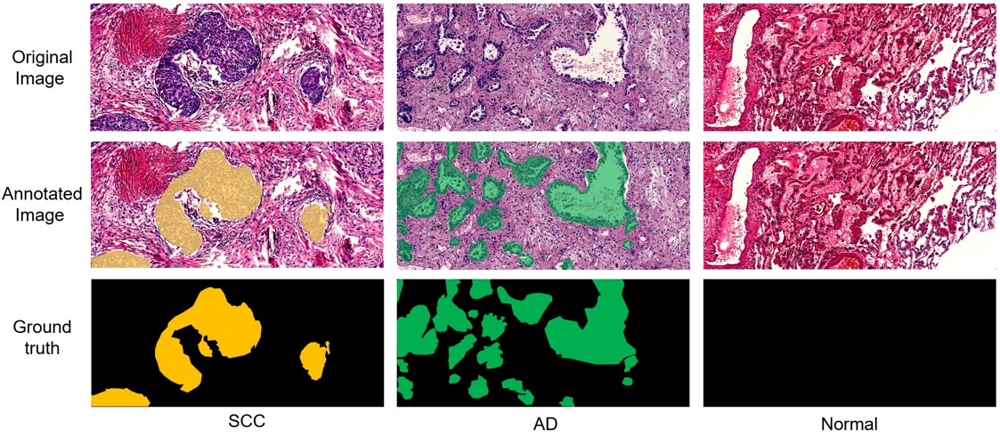
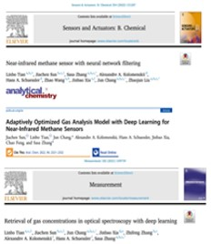
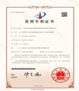

欢迎了解张飒飒教授课题组
张飒飒，博士，信息科学与工程学院教授，博士生导师，山东大学国际合作联络教授，中国光学学会红外与光电器件专业委员会委员。从事激光物理与技术、光电传感、光谱技术及应用、纳米材料的制备与表征、智慧医疗大数据图像识别等领域的教学和科研工作。2006年3月至2007年3月美国德州大学奥斯汀分校微电子研究中心（MER，UT @ Austin）访问学者，2013年7月至2014年7月美国华盛顿大学（西雅图）（UW @Seattle）Virginal Merrill Bloedel中心访问教授，2018年1月至2018年3月美国德州农工大学（Texas A&M）物理与天文学院高级研究学者。开展国际合作，与多所国外著名学府建立了密切的科研联系，已联合培养博士、博士后。主持和参加了973重大专项、国家自然科学基金、GF项目、省部级、国家重点实验室开放基金、山东大学交叉学科项目及山东省、济南市横向研究课题，发表SCI论文80余篇，获国家发明专利10项，申请6项。
项目介绍
项目一：基于人工智能的精密光谱气体传感器研究及应用
1.多组分混合气体检测
多组分混合光谱中混合物成分的识别与对应浓度检测的深度学习模型的设计
2.石英音叉光声光谱气体检测
基于光声效应、光热效应、外差检测的微量气体浓度测量研究
  项目二：基于深度学习的智慧医疗大数据图像识别系统
1.早期的癌症风险评估的研究
本项目为基于深度学习的早期癌症图像识别系统研究，核心工作为构建并应用神经网络模型对病理图像进行分类，实现早期癌变的风险分级及量化评估。
2.病理辅助诊断及病变区域精确分割的研究
本项目拟结合深度学习算法进行自主学习病理图像的正常组织与病变组织区别，对图像的像素级数值输入进行建模，在实际目标分割中对病变区域进行精准标注
 成果展示
 论文
1.杨易. Nonequilibrium carrier and phonon dynamics in the ferrimagnetic semiconductor Mn3Si2Te6. Physical review B, 109, 2024.
2.Ultrafast carrier and phonon dynamics in Bi2Se3 under high pressure. Physical review B, 109, 2024. （一区，Top5）
3.徐荣琪. Leveraging deep learning for optimal methane gas detection: Residual network fflter assisted direct absorption spectroscopy. SENSORS AND ACTUATORS A-PHYSICAL, 2024.
4.Qingjin Chi, Linbo Tian, Rongqi Xu et al., (2023) A dual-comb gas sensor integrated with a neural network based spectral decoupling algorithm of overlapped spectra for gas mixture sensing. ACS Omega 2023, 8, 16, 14648–14655. (封面文章)
5.田遴博. Analysis of Gas Mixtures with Broadband Dual Frequency Comb Spectroscopy andUnsupervised Learning Neural Network. ADVANCED INTELLIGENT SYSTEMS, 2023.
专利
1.基于人工神经网络的激光光谱气体检测系统及方法
2.基于神经网络的光学频率梳气体检测系统及方法
3.一种基于卷积神经网络的气体激光吸收光谱滤波方法
4.一种基于Mask R-CNN的肺癌病理组织切片识别及分割方法